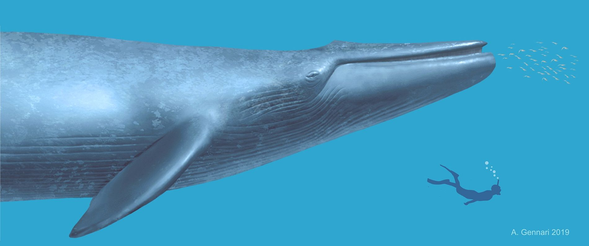
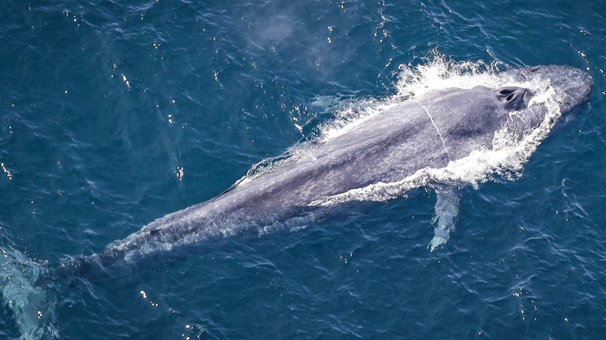
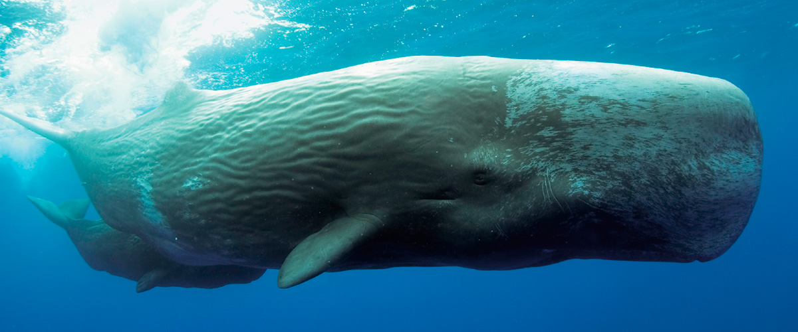
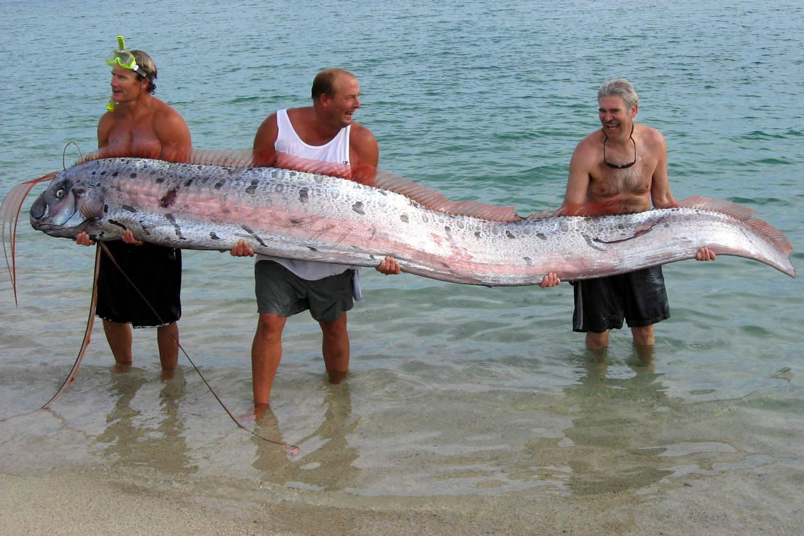
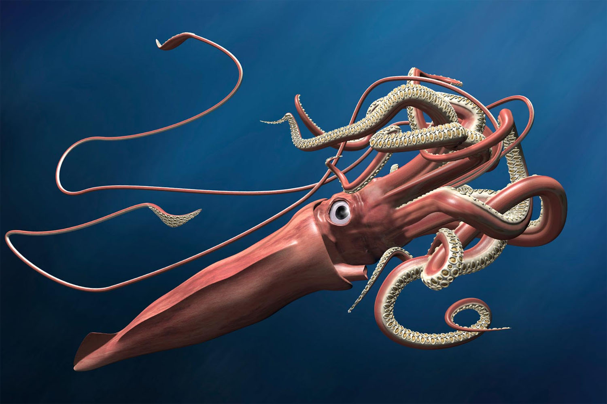
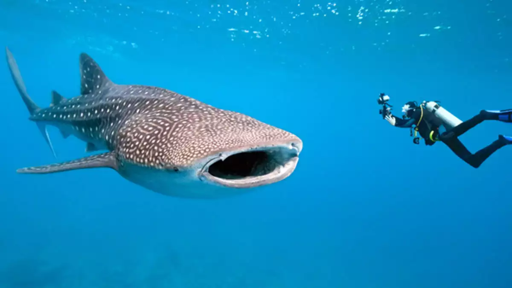
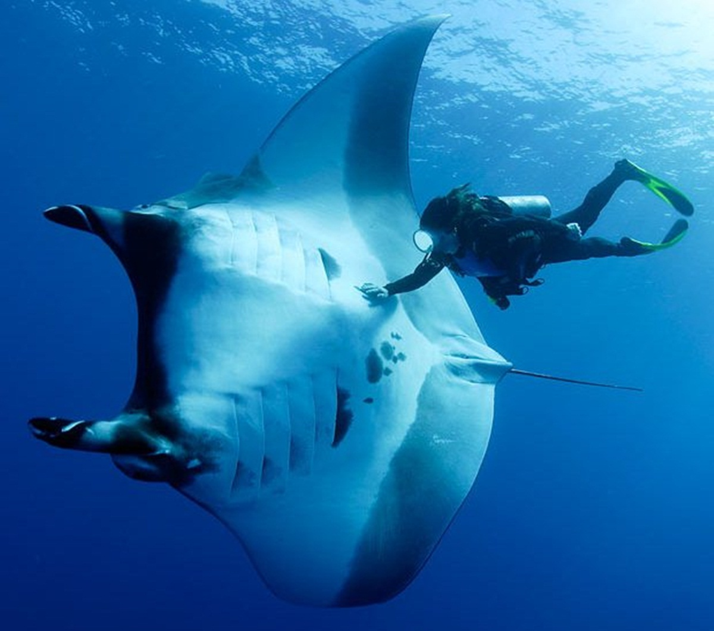
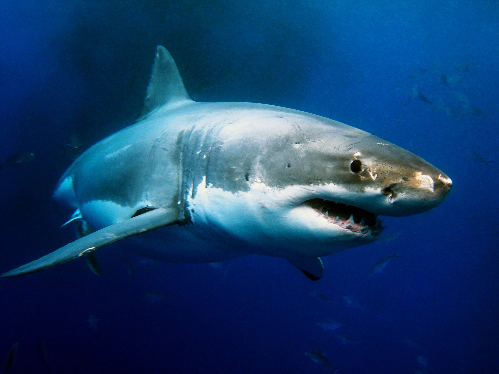
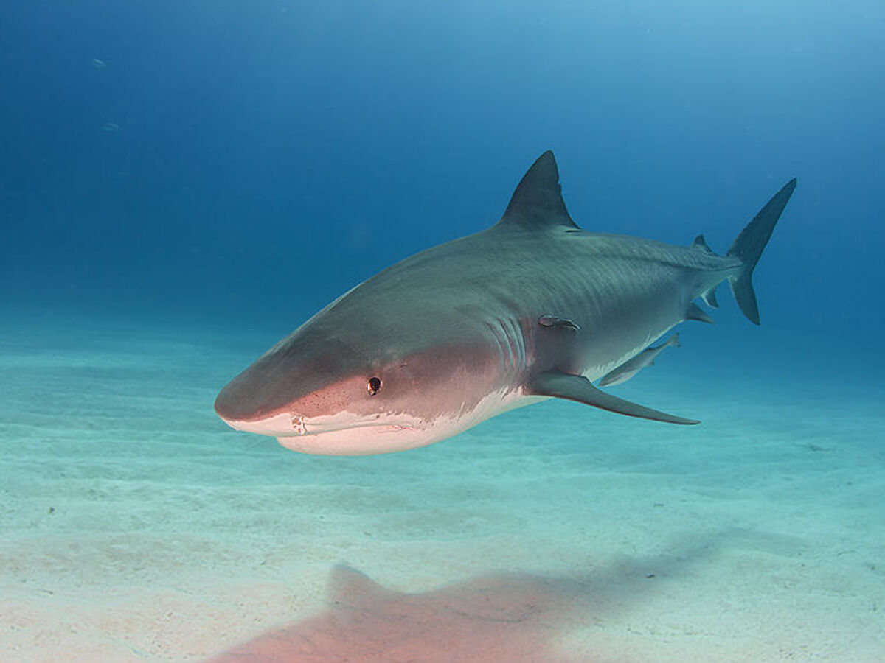

-
1) BALEIA-AZUL (30 METROS)

A baleia-azul é o maior animal do planeta, chegando a medir cerca de 30 metros de comprimento. Ela pode pesar até 200 toneladas, o equivalente a 33 elefantes africanos. Sua dieta consiste principalmente de krill, um pequeno crustáceo encontrado nos oceanos.
-
2) BALEIA COMUM (27 METROS)

Conhecida popularmente como baleia comum (ou baleia-fin), a espécie Balaenoptera physalus é a segunda maior dos mares. As fêmeas podem chegar a 25 metros de comprimento e os machos a 27. As baleias comuns, que pesam em torno de 70 toneladas, vivem em todos os oceanos do mundo, porém hoje são vistas com muito menos frequência devido a caça a esse animal no passado. Estima-se que entre 1904 e 1979 cerca de 750,000 baleias desse tipo tenham sido mortas só no hemisfério sul.
-
3) BALEIA CACHALOTE (18 METROS)

A baleia cachalote, espécie que inspirou o livro Moby Dick, é conhecida por sua cabeça enorme e arredondada. Esses animais têm cerca de 18 metros de comprimento e chegam a pesar 45 toneladas. Seus cérebros são os maiores do mundo e eles são conhecidas também pelo alto som que fazem para se comunicarem debaixo d'água.
-
4) REGALECO (17 METROS)

Esse peixe bem esquisito habita águas bastante profundas, por isso não é fácil vê-lo por aí nas superfícies dos mares. Com 17 metros de comprimento eles podem pesar até 270 quilos! São conhecidos também por "rei dos arenques", por parecerem uma versão gigante desses peixinhos. Essas criaturas do mar não possuem escamas e apesar de parecerem bastante aterrorizantes, não são um perigo para os seres humanos.
-
5) LULA GIGANTE (14 METROS)

Esses animais podem chegar aos 150 quilos e são considerados predadores temíveis devido aos 25 ganchos que carregam na ponta de seus tentáculos! Seus olhos são enormes, os maiores dentre os animais! Medem cerca de 25 centímetros de diâmetro e estão sempre de olho em tudo!
-
6) TUBARÃO BALEIA (12 METROS)

Apesar de ser chamado de tubarão baleia, esse animal é um peixe e não um mamífero. O tubarão baleia, terceiro maior gigante dos mares, é também o maior tubarão do mundo, podendo chegar aos 12 metros de comprimento e 20 toneladas. Apesar do tamanho impressionante, os tubarões baleia não são predadores ferozes, mas considerados animais dóceis, que se alimentam de pequenos camarões, peixes e plâncton.
-
7) ORCA (9,7 METROS)

A orca é da família dos golfinhos e conhecida popularmente como "baleia assassina" por ser uma grande predador, se alimentando de peixes, pinguins, focas e até de outras baleias. Esses animais emitem sons que viajam debaixo d'água e os ajudam a encontrar suas presas.D
-
8) RAIA MANTA (8,8 METROS)

Registrada como a maior das raias, essa espécie é ainda um dos maiores entre todos os animais dos mares. Também conhecida como raia jamanta ou manta gigante, ela pode chegar até aos quase 9 metros de comprimento. São considerados animais muito inteligentes e por causa das suas duas barbatanas em forma de chifre são muitas vezes referidas como "peixe-diabo" ou "raia-diabo".
-
9) TUBARÃO BRANCO (6 METROS)

O temido tubarão branco tem peso médio de duas toneladas, cerca de 300 dentes bastante afiados e um excelente olfato! Esses animais são responsáveis por metade dos ataques feitos aos humanos. Suas presas preferidas, entretanto, são leões marinhos, algumas baleias e tartarugas. Um fato curioso é que os tubarões brancos podem detectar uma gota de sangue em 94 litros de sangue! Que medo!
-
10) TUBARÃO TIGRE (5 METROS)

O nome “tigre' é devido as manchas pretas que o tubarão tigre possui quando jovem. Mas, conforme o crescimento do corpo, essas manchas desaparecem e o compor adquire uma coloração cinza ou marrom. Mede cerca de 6 metros , em média, mas pode atingir os nove metros de comprimento.